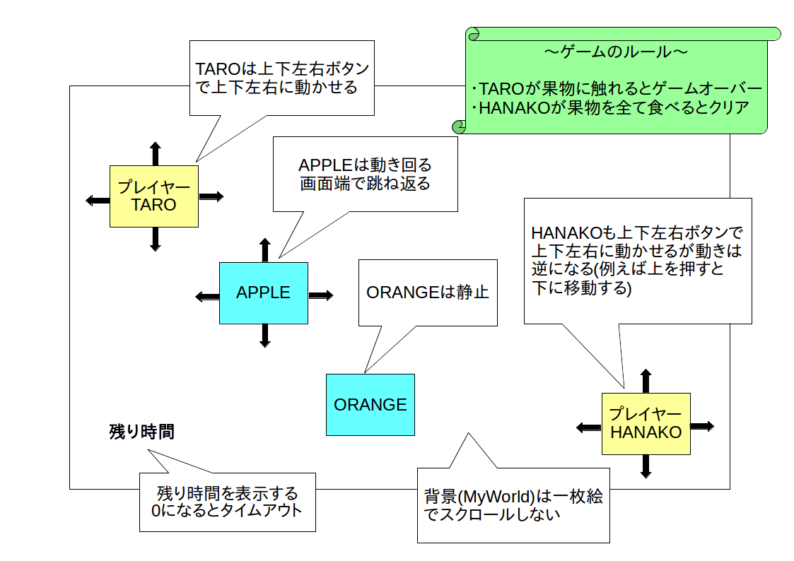

まず要求定義を行って要求仕様書を作成します。
今回は以下の様な要求仕様書を作成しました。
| 名称 | TARO と HANAKO |
| 用途・目的 | 暇つぶし用ミニゲーム |
| 対象ユーザ | 6 歳以上の男女 |
| システム構成 | 開発環境: Unity2D |
| 概要 |
・PC 上で動く 2 次元アクションゲーム
・ボタン(ゲームパッドやキーボード)で操作 ・画面上に TARO と HANAKO というプレイヤーキャラクターと複数の果物を表示する ・ユーザーはボタン操作により TARO と HANAKO を動かせる ・TARO が果物に触れたらゲームオーバー ・HANAKO が制限時間内に画面上の全ての果物を食べたらゲームクリア ・動きまわる果物もある |
次に要求仕様を元に全体設計を行って全体仕様書を作成します。
今回は以下の様な全体仕様書を作成しました。
・背景(MyWorld と名付ける)は一枚絵とし、スクロールしない
・ゲーム開始時の TARO の初期位置は画面左上
・ゲーム開始時の HANAKO の初期位置は画面右下
・TARO は上下左右ボタンで上下左右に動かせる
・HANAKO も上下左右ボタンで上下左右に動かせるが動きは逆になる(例えば上を押すと下に移動する)
・TARO と HANAKO 間に当たり判定は無い(スレ違い可能)
・TARO と HANAKO は画面外に移動できない
・果物には APPLE と ORANGE がある
・ゲーム開始時に APPLE と ORANGE をランダムな位置に複数個表示する
・APPLE は動きまわる
・ORANGE は静止している
・TARO が果物に触れたらゲームオーバーとなりメッセージ表示
・HANAKO が果物に触れたら食べたことにして果物を消す
・HANAKO が画面上全ての果物を食べたらゲームクリアとなりメッセージ表示
・時間制限を設け、時間内に全ての果物を消せなかったらタイムアップとなりメッセージ表示
・残り時間は画面左下に表示

ゲームオブジェクト仕様
| ゲームオブジェクト名 | 内容 |
|---|---|
| MyWorld |
・背景
・キャラクターの初期配置やタイムアップ処理などのマネージャー処理も行う |
| TARO |
・プレイヤーキャラ その 1
・ボタン操作(上下左右移動)を行う ・果物に触れたらゲームオーバー処理を行う |
| HANAKO |
・プレイヤーキャラ その 2
・ボタン操作(上下左右移動)を行う。ただし動きをTAROと反転させる ・果物との当たり判定を行い、ゲームクリア処理を行う |
| APPLE |
・果物 その 1
・適当に動く |
| ORANGE | ・果物 その 2 |
全体仕様書を元に詳細設計書を作成します。
なお詳細設計書を一度に示すとかなり長くなりますので、各工程毎にページを分けて示すことにします。
次に WBS(Work Breakdown Structure: 作業分解構成図) とガントチャートを作ってスケジュール管理を行います。
今回は以下の様な図を作成してみました。
なおガントチャート内の赤い線はアクティビティ間の依存関係です。
準備中